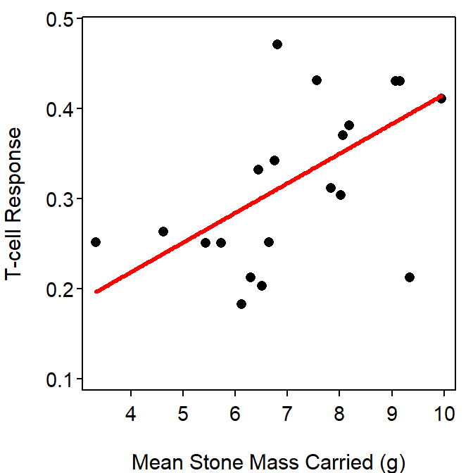

summary() because there are three p-values in that table. Be precise with your language!!
Yes, there is a signficant relationship between T-cell response and mean stone mass carried by Black Wheatears (p=0.0061; Table 1). Specifically, as the mean stone mass increases by 1 g the mean T-cell response increased between 0.011 and 0.055 Table 2.
The T-cell response for all Black Wheaters that carried a mean stone mass of 5 g is between 0.071 and 0.432.
The mean T-cell response for all Black Wheaters that carried a mean stone mass of 5 g is between 0.190 and 0.313.
The prediction interval for the individual (question 3) is wider than the confidence interval for the mean (question 2) because there is more variability in predicting an individual as compared to a mean. Variability for predicting an individual includes both sampling and natural variability, whereas variability for the mean includes only sampling variability.
The relationship between T-cell respose and mean stone mass carried by a Black Wheater is illustrated in Figure 1.
Table 1: Summary of the linear regression of T-cell response on mean stone mass carried by Black Wheaters.
Estimate Std. Error t value Pr(>|t|)
(Intercept) 0.08750 0.07868 1.112 0.27996
msm 0.03282 0.01064 3.084 0.00611
---
Residual standard error: 0.08102 on 19 degrees of freedom
Multiple R-squared: 0.3336, Adjusted R-squared: 0.2986
F-statistic: 9.513 on 1 and 19 DF, p-value: 0.006105 Table 2: Confidence intervals for coefficients of the linear regression of T-cell response on mean stone mass carried by Black Wheaters.
2.5 % 97.5 %
(Intercept) -0.07717487 0.25216884
msm 0.01054860 0.05509438
Figure 1: Scatterplot of T-cell response and mean stone mass carried by Black Wheaters with the best-fit line.
R Appendix.
d3 <- read.csv("Wheatears.csv")
lm3 <- lm(tcr~msm,data=d3)
summary(lm3)
confint(lm3)
predict(lm3,data.frame(tcr=5),interval="prediction")
predict(lm3,data.frame(tcr=5),interval="confidence")
fitPlot(lm3,xlab="Mean Stone Mass Carried (g)",ylab="T-cell Response")